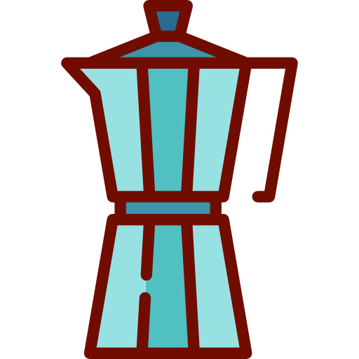

Detras de Coffe Shop, esta un grupo de amigos apasionados por el...
BUEN CAFE.
Venimos a transformar la forma en que se toma café en nuestro país. Queremos transmitir y enseñar nuestra pasion.
Las principales características de nuestro café son:
- 1- Nuestro café siempre te llega fresco.
- 2- Usamos los mejores granos (Solo café de especialidad).
- 3- Tostado Mas Claro, con mas sabor y menos amargor.
Historia del Café
La historia del café y cómo se extendió el cultivo de una de las bebidas más consumidas en el mundo es muy atractiva y se remonta al siglo XIII, aunque sigue sin conocerse el origen del café ciertamente. Son muchas las historias y mitos que se cuentan acerca de cómo se originó el café, esta bebida tan conocida mundialmente. Se cree que fueron los ancestros etíopes los primeros en descubrir y reconocer todos los beneficios de los granos de la planta del café, como por ejemplo su efecto energizante. Sin embargo, de momento no se ha hallado ninguna evidencia directa que indique en qué parte de África se empezó a cultivar la planta
La leyenda del pastor y sus cabras en Etiopía
Una de las leyendas más famosas y divertidas cuenta que fue un pastor de cabras de Etiopía quien, un día, descubrió las particularidades energizantes de los granos de la planta de café. Kaldi, así es como se llamaba el famoso pastor de cabras, estaba sacando a pastar a las cabras por las laderas de Kaffa, en Abisinia. Sus cabras se extraviaron y acabaron un poco más lejos de donde habitualmente pastaban. Cuando las encontró, Kaldi se dio cuenta de que sus cabras estaban en un estado de agitación un tanto extraño y se preguntó si podría deberse a lo que estaban comiendo en ese mismo momento. De este modo, decidió probar él mismo aquellos frutos tan extraños. Tras ingerir los frutos, Kaldi también empezó a notar cierta inquietud en su cuerpo y decidió contarlo en la mezquita del pueblo. De esta manera, se empezaron a utilizar estos frutos extraños en forma de infusión, para conseguir así que la gente se mantuviera despierta durante la oración nocturna.
¿Cuántas son las principales variedades de café?
Según World Coffee Research existen más de 100 especies de café, pero las principales son dos: Arábica y Robusta. El café Arábica se asocia a una alta calidad en taza, pero es vulnerable a las plagas; se cultiva en Latinoamérica, África Central y Oriental, en la India e Indonesia.
Variedades Segun su Origen
* Brasileño: meloso y afrutado.
* Colombiano: suave y aromático.
* Etíope: intenso con florales y cítricos.
* Keniata: intenso y con cuerpo.
* Asiáticos/Pacífico: enérgicos y con sabores herbáceos (India, Java o Sumatra).
Metodos de Filtrado
-
Aeropress
-
Cafe con Aeropress
-
Automatica
-
Cafe con Cafetera Automatica

-
Prensa Francesa
-
Cafe con Prensa Francesa
-
Chemex
-
Cafe con Chemex
